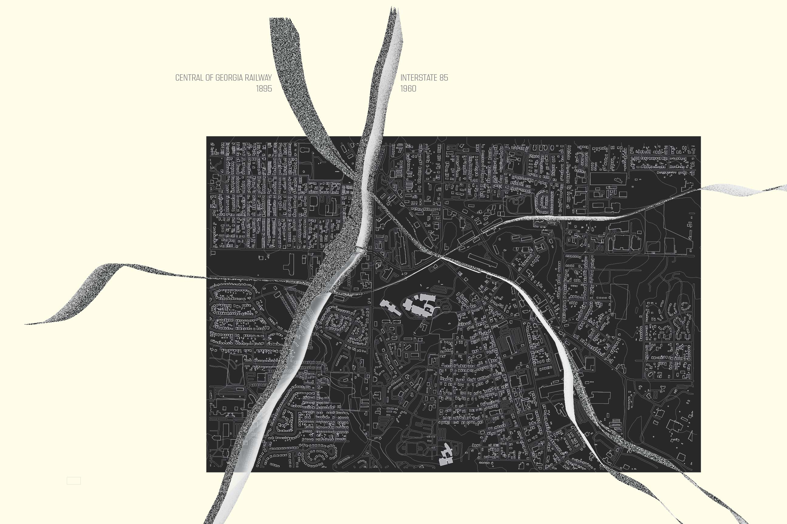

This project, for RISD's "Core 3: Cities" sutdio, analyzes how urban and architectural elements have generated systems of exclusion at several scales in Atlanta, Georgia. I studied elements such as fences, highways, and freight train lines and their divisive effects on communities.
While I studied systems in the entire city, I zoomed in on the Carver district, where I eventually designed a K-12 school that responded to issues identified in my research.
The project was done with fellow RISD students Huining (Eve) Guo and Neha Kumar.
Below is a map of Atlanta zoomed in on the Carver district. The Central of Georgia Railway (built 1865) and the I-85 highway (added 1980) divide the district into disparate zones.

A more zoomed in map shows my personal experience through the sites of the Carver High School and TH Slater Elementary School, plus their surrounding areas. The dashed line represents the path I walked; the solid line indicates where I had to travel by car because walking across the freight train line was not possible. This inaccessibility was a key condition I strove to overcome in my proposed design for a school.


The two following models illustrate how a freight train and highway intersection isolates a part of the Carver district into a triangle. The periphery of this cluster is plagued with trash and noise; it is virtually inaccessible by pedestrians.


A "canopy," as proposed below, can be an inclusive tool to bridge humans over the exclusive systems. While the canopy is theoretically a bridge, it must be designed intelligently so it does not exclude what is under it.

Cities studio, RISD. Fall 2019.